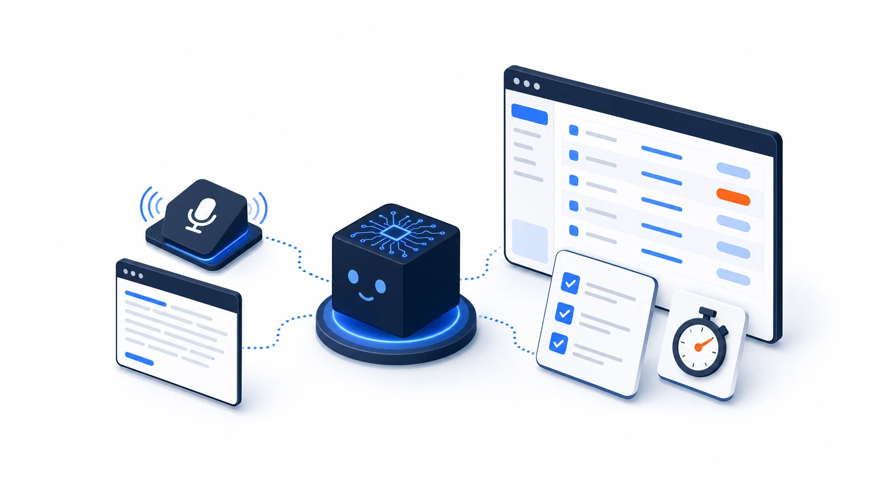
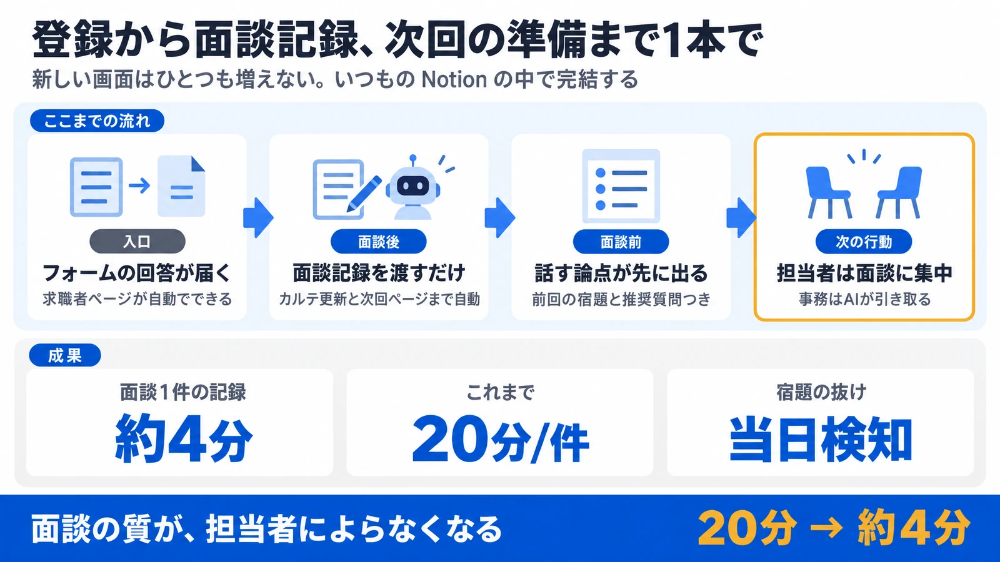

求職者登録、面談準備、議事録処理が3コマンドで回る AI を、顧客の Notion の中に直接実装した。仕様書とデモ台本まで揃えて納品。

人材紹介会社のキャリアアドバイザー業務では、求職者情報がLステップ・Drive・スプレッドシートに分散。面談のたびに転記・準備・議事録処理で65〜90分の事務作業が発生していた。
求職者DB・面談議事録DB・アクションDBを設計し、「求職者登録→面談準備→議事録処理」が3コマンドで完結するAIを顧客環境に直接実装。仕様書・面談タイプ別テンプレート6種・デモ台本まで含めて納品した。
見出しの順に、入口から出口まで通しで動かしています。
事務作業は約4分に縮んだ。エラーへの対処ログ7件まで記録しながら運用を直し続けている。「ツール導入」ではなく「業務ごと実装」の実例。

仕様書・デモ台本・エラー対処ログ7件まで揃えて「作って終わり」にしなかった。同じ課題があれば、御社のツールと業務の流れに合わせて組み替えます。まずは30分、いまの業務を聞かせてください。